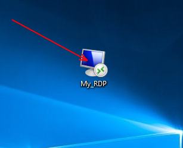
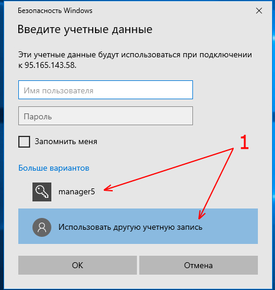
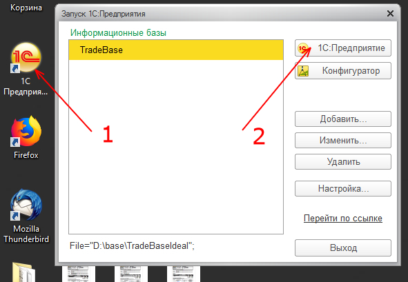
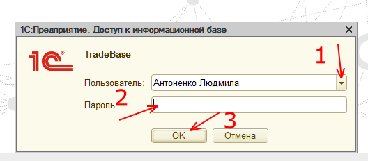
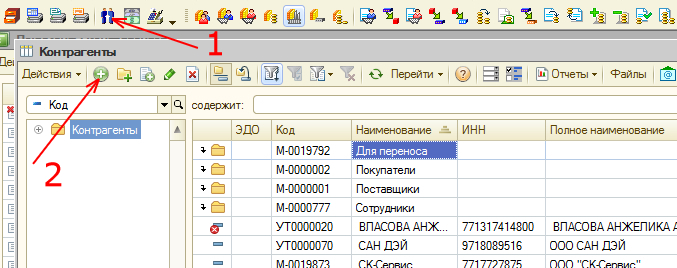
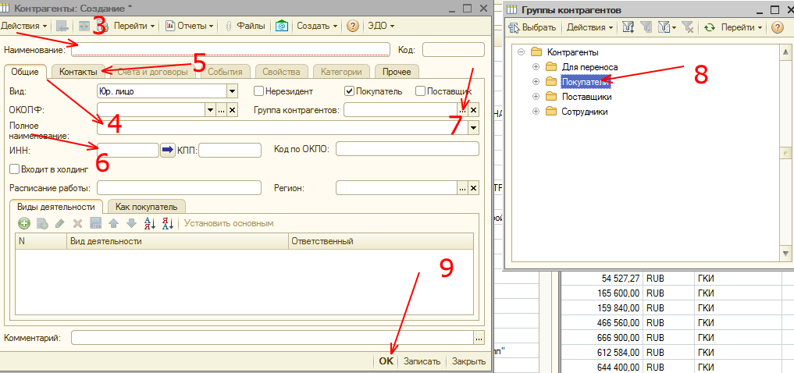

Вход в 1С
Для того чтобы начать работу в 1С, необходимо войти на удаленный рабочий стол, затем в саму программу.
- Нажимаем на рабочем столе на My_RDP. Если заходим впервые:
- нажимаем "Использовать другую учетную запись"
- вводим имя пользователя и пароль;
- нажимаем ОК.
Когда заходим повторно, просто вводим пароль и нажимаем ОК.
Если введенные данные верны, попадаем на удаленный рабочий стол.


- Находим на рабочем столе иконку "1С Предприятие" и кликаем 2 раза.
- В открывшемся окне, также нажимаем на кнопку "1С Предприятие".
 - Выбираем пользователя: себя, если Вы не заведены, обратитесь к руководству за доступом.
- Вводим пароль от своей учетной записи.
- Нажимаем "ОК".

Если введеные данные верны, откроется программа 1С.
Создание контрагента
Контрагентами могут являться только юридические лица. Для создания вам понадобятся реквизиты компании-контрагента, которые нужно запросить у контактного лица.
- Открываем справочник "Контрагенты".
- Нажимаем "Добавить".
 - Вписываем наименование организации. Пример: "ООО Компания"
- Вписываем полное наименование. Пример: "Общество с ограниченной ответственностью "Компания"".
- Заполняем контактные данные: Адрес, телефон, почта и другая важная информация.
- Вводим ИНН компании, нажимаем на стрелку справа.
 - Выбираем группу, в которую входит контрагент - Покупатели.
- Нажимаем ОК.
Контрагент создан и теперь его можно выбрать при создании заказа.
Работа с компаниями
Когда ваш клиент юридическое лицо,